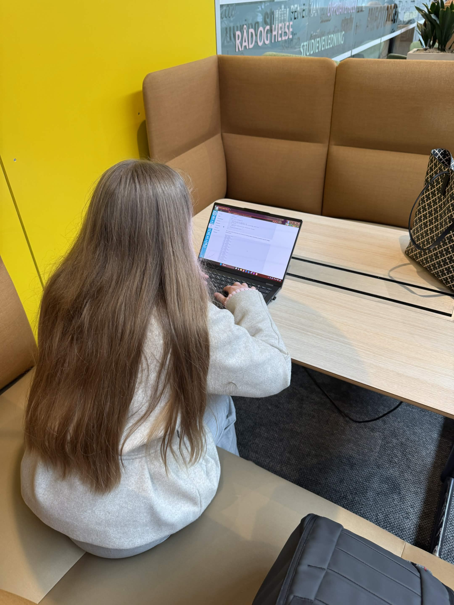
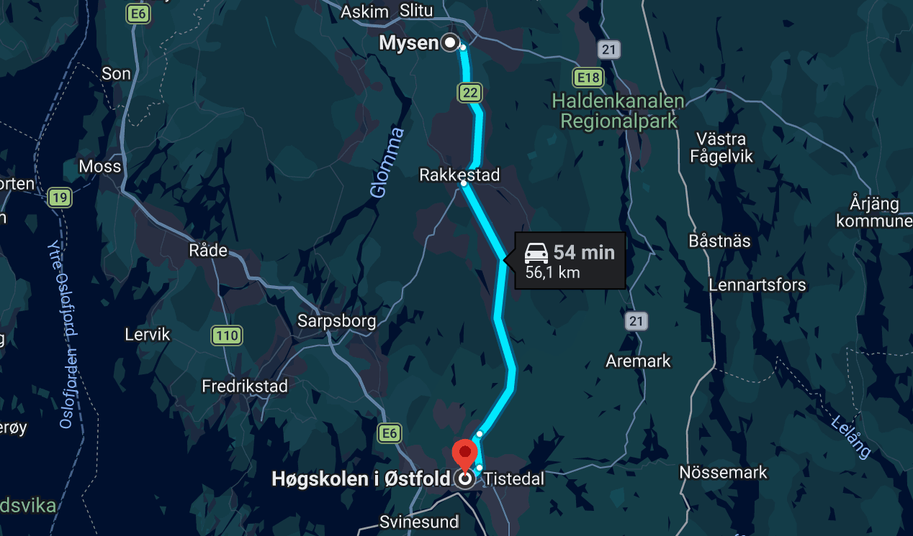

Studentøkonomi
«Studenter kan ikke ta taxi hver dag?»
Hvordan føles det å faktisk måtte få studentlivet til å gå rundt? Emely (23) lever på støtten fra Lånekassen, og det er nesten aldri penger igjen når måneden er omme.
Kort fortalt
- Emely (23) har ingen jobb ved siden av studiene og lever på støtten fra Lånekassen.
- Når husleie, mat og andre faste utgifter er betalt, er det nesten aldri penger igjen.
- Hun har sluttet å bli med på middager og turer, og føler at hun faller litt utenfor.
- (x) prosent av studentene jobber ved siden av studiene, ifølge (kilde).
Ofte er klokka blitt 16 før Emely er hjemme i Mysen igjen etter en dag på skolen i Halden.
Emely er 23 år og går første året på digitale medier og design ved Høgskolen i Østfold. Hun bor i leilighet med samboeren sin i Mysen og pendler til campus. I sommer flyttet hun hjemmefra, og siden august har hun levd på støtten fra Lånekassen. Samboeren hjelper til med leie og regninger.
– Ironisk at jeg gjør det når jeg bare har stipend, jeg vet, sier Emely.
Emely er ikke alene om å kjenne på valget mellom jobb og studier. (x) prosent av studentene jobber ved siden av studiene, og i snitt jobber de (x) timer i uka, viser (kilde).
Hvor går pengene?
Emely får rundt 12 000 kroner i måneden fra Lånekassen. Bare en mindre del av det er stipend. Resten er lån hun må betale tilbake senere.
Tabellen viser omtrent hvordan økonomien hennes ser ut i løpet av en måned.
| Inntekt/utgift | Ca. per måned |
|---|---|
| Lånekassen | 12 000 kr |
| Jobb | 0 kr |
| Husleie | 5 500 kr |
| Mat | Under 2 500 kr |
| Transport, forsikring og telefon | 1 500–2 000 kr |
| Andre utgifter | (antall) kr |
| Igjen | Nesten aldri noe |
Emely har ikke satt opp noe budsjett.
– Jeg føler jeg har nokså grei kontroll over økonomien. Jeg lever enkelt, selv om jeg så og si aldri kan si jeg har god råd, sier hun.
Et par ganger har hun lånt penger av foreldrene sine, da husleien og en uventet regning kom samtidig.
– Jeg prøver å unngå det, men noen ganger går det ikke an annerledes.
Hun har ennå ikke opplevd å mangle penger til noe helt nødvendig. Men hun regner med at det vil komme hvis hun ikke skaffer seg en jobb.
Jobb eller studier?
Emely forteller at studiene tar mye av tiden hennes, og at hun ikke alltid er den beste til å prioritere tiden sin.
– Jeg fikk høre mye av både studenter og forelesere at man må regne med studiene som en fulltidsjobb, og det skremte meg litt, sier hun.
Valget mellom jobb og studier gir mye grubling. Noen ganger føler hun seg lat eller utakknemlig fordi hun kjenner på stress rundt forventningen om både gode resultater og jobb ved siden av.
– Men jeg prøver å være snill med meg selv, sier Emely.
«Jeg føler at for mange så må det være enten eller; gode karakterer, eller god råd.»

En vanlig hverdag
Emely er på skolen mesteparten av hverdagene. Siden hun pendler fra Mysen til Halden, blir dagene lange.
Slik ser en vanlig ukedag ut for Emely
| Når | Hva |
|---|---|
| Morgen | Pendler fra Mysen til Halden |
| Dagtid | På skolen |
| Ca. kl. 16 | Hjemme i Mysen |
| Ettermiddag | Prøver å få inn en treningsøkt |
| Kveld | Mer studier, eller tid med venner og familie |
Slik fordeler Emely de 168 timene i uka
- Studier: (x) timer
- Jobb: 0 timer
- Søvn: (x) timer
- Pendling: (x) timer
- Fritid: (x) timer
- Annet (mat, trening, husarbeid): (x) timer

Må si nei
Det er ikke vanskelig for Emely å svare på hva hun må si nei til fordi det blir for dyrt.
– Middager ute med venninner, absolutt. Og jeg har sluttet å bli med enkelte på turer eller slike påfunn fordi jeg vet jeg ikke har råd, sier hun.
Venninnene hennes har et ukentlig bowlingmøte som Emely likte å være med på. Nå kan hun ikke være med hver uke lenger.
I august sa hun også opp abonnementet på treningssenteret.
– Det er litt kjipt, men heldigvis tilbyr Høgskolen i Østfold et treningssenter på campus til 700 kroner per semester.
Det som er vanskeligst, er ikke pengene i seg selv.
– Jeg merker jo at venninnene mine synes det er kjedelig at jeg må takke oftere nei, men det er jo til å regne med. De viser forståelse uansett, men det er kanskje det som gjør mest vondt. Ikke selve pengemangelen, men at jeg føler jeg faller litt utenfor, sier Emely.
«Ikke selve pengemangelen, men at jeg føler jeg faller litt utenfor.»
Vanskelig å rekke alt
(Navn), (tittel, for eksempel studieveileder ved ...), (forklar hva fagpersonen mener om studenters tidsbruk).
– (Sitat om hvordan studenter skal klare å kombinere jobb, studier, obligatoriske oppgaver, familie, venner, hobbyer og trening), sier (navn).
(Informasjon om studenter som har måttet gi opp studiene, med kilde.)
Fakta: Studenter og jobb
- (x) prosent av studentene jobber ved siden av studiene.
- De som jobber, jobber i snitt (x) timer i uka.
- (Et tredje relevant tall.)
Kilde: (navn på kilden)
Hva mener du?
Nok til en kaffe
Hva skal til for at økonomien er god nok som student? For Emely handler det ikke om å ha mye penger.
– For meg handler det ikke om å ha masse penger, bare nok til at jeg slipper å regne på hver eneste krone. Nok til at jeg kan si ja til en kaffe med en venninne uten å tenke meg om tre ganger, og at jeg kan fokusere fullt på studiene som en faktisk fulltidsjobb, sier hun.
Hun er usikker på hvordan det blir fremover.
– Jeg vet ikke. Det er mye å sette seg inn i som ny student. Jeg synes forventningene om fulltidsstudier og jobb ved siden er skummelt.
(Kommentar fra en med ansvar, for eksempel en politiker eller studentrepresentant.)
Det Emely vil at folk skal forstå om studentøkonomi, er at det handler om mer enn penger.
– Det handler også om tid og overskudd, og jeg har sett mange av mine venninner knekke over balansen mellom studier og jobb, sier hun.